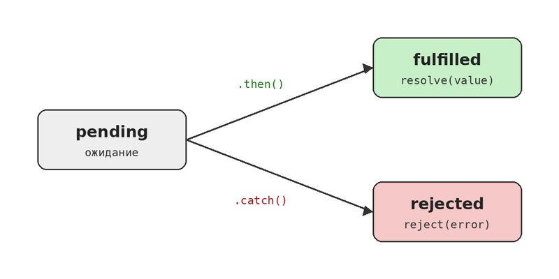

Промисы и async/await
Многие операции в JavaScript выполняются не сразу: запрос на сервер, чтение файла, таймер. Программа не ждёт их окончания и идёт дальше. Такой код называется асинхронным, и для работы с ним в ES6 появились промисы, а в ES2017 — async и await.
Проблема колбэков
Раньше результат асинхронной операции получали через функцию обратного вызова (колбэк). Когда операций несколько и каждая зависит от предыдущей, код уезжает вправо. Это называют «адом колбэков» (callback hell).
getUser(1, function (user) {
getOrders(user.id, function (orders) {
getDetails(orders[0], function (details) {
console.log(details);
// и так далее...
});
});
});Что такое промис
Промис (Promise) — это объект, который обещает вернуть результат когда-нибудь потом. У него три состояния: ожидание (pending), выполнен успешно (fulfilled) и выполнен с ошибкой (rejected).

const wait = ms => new Promise((resolve, reject) => {
if (ms < 0) {
reject(new Error('Время не может быть отрицательным'));
}
setTimeout(() => resolve(`Прошло ${ms} мс`), ms);
});
wait(1000)
.then(result => console.log(result)) // Прошло 1000 мс
.catch(error => console.log(error.message));Цепочки промисов
Метод then сам возвращает промис, поэтому вызовы можно выстраивать в цепочку. Пример с колбэками выше превращается в ровный список шагов:
getUser(1)
.then(user => getOrders(user.id))
.then(orders => getDetails(orders[0]))
.then(details => console.log(details))
.catch(error => console.log('Ошибка:', error))
.finally(() => console.log('Готово'));Если нужно запустить несколько операций одновременно и дождаться всех, используют Promise.all().
async и await
Ключевое слово async перед функцией делает так, что она всегда возвращает промис. А await внутри такой функции «ждёт» результат промиса. В итоге асинхронный код выглядит почти как обычный последовательный.
async function showDetails() {
const user = await getUser(1);
const orders = await getOrders(user.id);
const details = await getDetails(orders[0]);
console.log(details);
}
showDetails();Пример: запрос к серверу
На практике async/await чаще всего используют вместе с fetch для загрузки данных. Ошибки ловятся обычным try...catch.
async function loadTodo() {
try {
const response = await fetch('https://jsonplaceholder.typicode.com/todos/1');
if (!response.ok) {
throw new Error(`Код ответа: ${response.status}`);
}
const todo = await response.json();
console.log(todo.title);
} catch (error) {
console.log('Не удалось загрузить:', error.message);
}
}
loadTodo();Частая ошибка новичков — забыть await. Тогда в переменную попадёт сам промис, а не данные, и дальше код сломается.